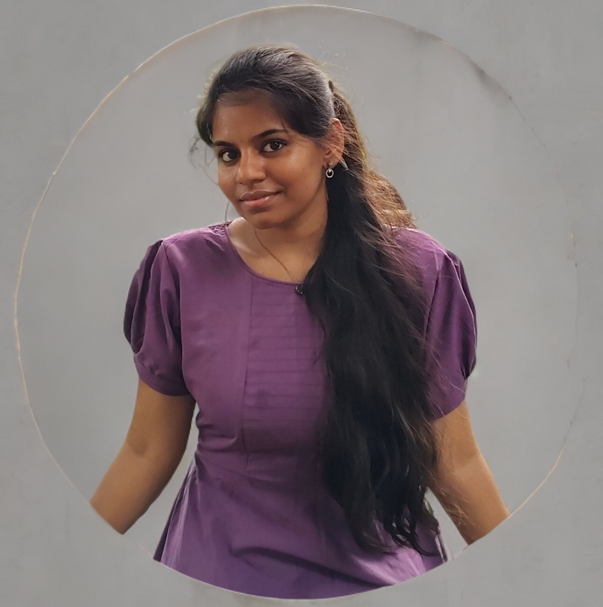

UI/UX Designer with a solid foundation in user-centered design,
interaction design,and responsive web interfaces. Experienced in
translating user requirements into intuitive and functional designs
using tools like Figma and Adobe XD. Strong understanding of HTML, CSS,
and front-end collaboration. Focused on improving usability, accessibility,
and overall user experience through clean and modern design solutions.
